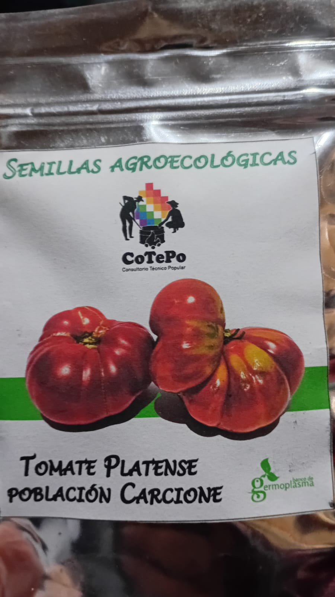
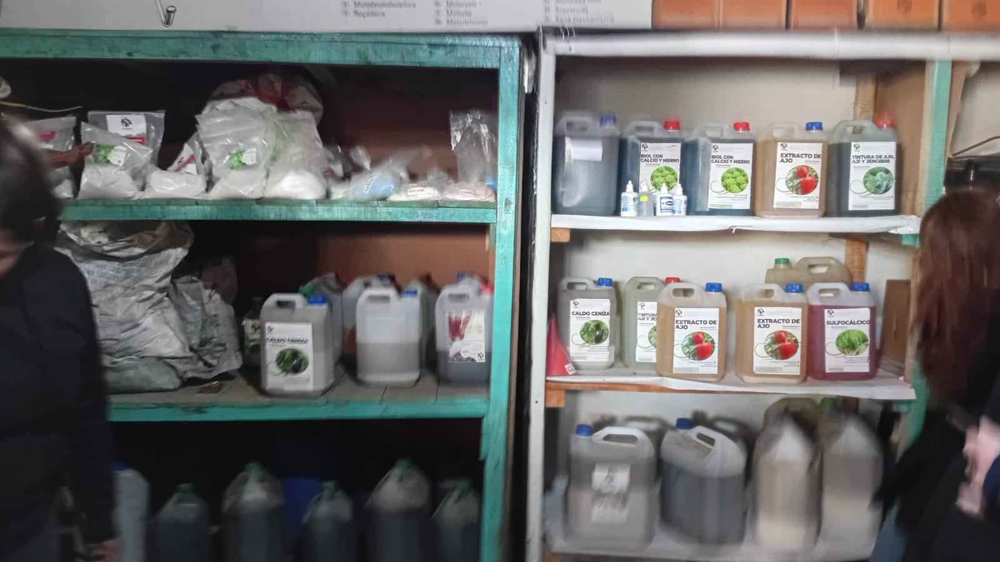
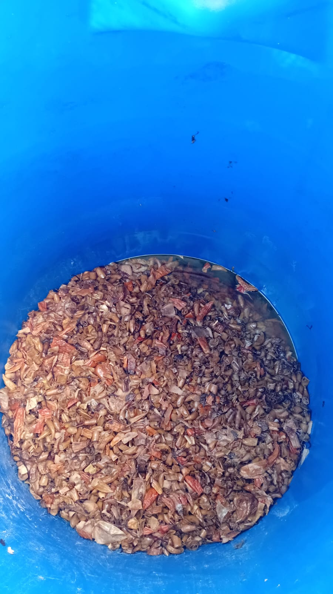
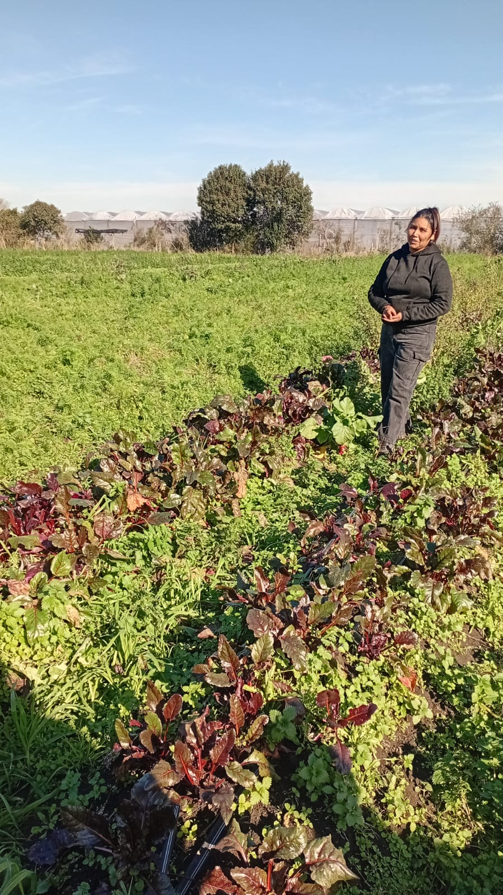
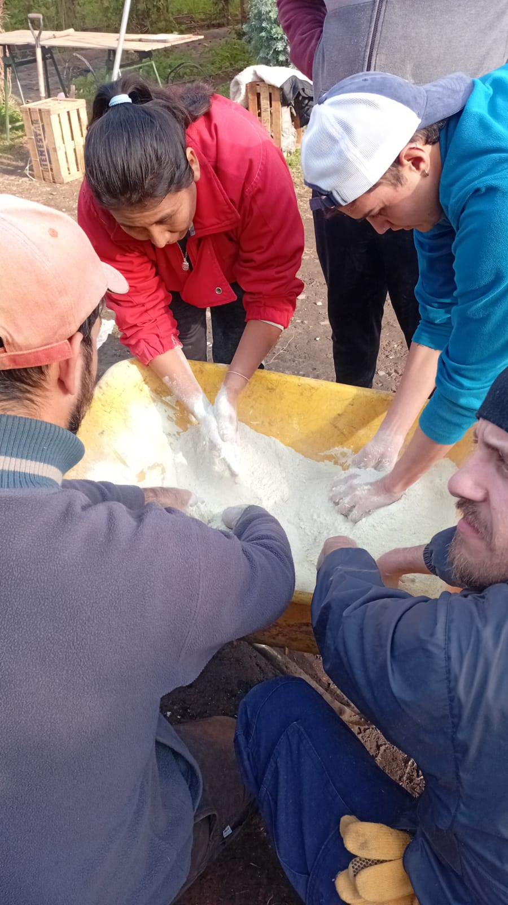
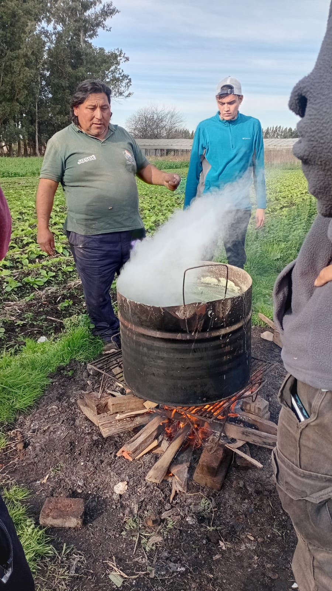

INMERSIÓN A LA REALIDAD SOCIAL AGRARIA · 2° PARCIAL
La realidad agraria,
desde nuestra quinta.
Producir alimentos también es construir territorio, compartir saberes y organizarnos. Una guía para entender el caso CoTePo y preparar el parcial en comunidad.
Empezar a estudiar ↗Ponerme a prueba →
Colonia Urquiza · Cinturón hortícola platense
QUE SE
CULTIVAN ✳
EL PUNTO DE PARTIDA
Una familia. Una quinta.
Una red que la sostiene.
El Consultorio Técnico Popular en Agroecología articula acompañamiento técnico, formación, bioinsumos y comercialización. Estudiamos las relaciones entre tierra, trabajo, capital y organización desde la experiencia productora.
01 — COMPRENDER
Del concepto a la quinta.
No encontramos ese concepto. Probá con otra palabra.
02 — CONECTAR
Nadie produce en soledad.
Elegí un vínculo para ver qué aporta y qué tensiones plantea.
✳Familia productora
Familia productora
+ CoTePo
Tierra · trabajo · saberes
producción · organización
Mapa conceptual del trabajo práctico. Los vínculos institucionales no implican acceso automático a financiamiento.
03 — OBSERVAR
Lo que vemos en territorio.
Registro fotográfico del anexo
del trabajo práctico · pp. 16–19

Autonomía y memoria productiva

Saberes que se vuelven insumos

Trabajo, técnica y organización
Ver más fotos del proceso



04 — RECORDAR
Ahora, contalo con tus palabras.
PARA EL ORAL
Relacioná. Explicá. Fundamentá.
¿Cómo se conectan el arrendamiento, la autonomía tecnológica y la comercialización colectiva? Elegí un problema de la quinta y explicá qué actores, tecnologías y formas de extensión podrían intervenir.
Ver una respuesta orientativa
Desde nuestro lugar de productores, alquilar la tierra limita la estabilidad para invertir. Elaborar bioinsumos puede reducir la dependencia de compras externas, aunque requiere trabajo, conocimientos y condiciones seguras. Una red entre organizaciones permitiría compartir transporte y vender en conjunto. La extensión participativa ayudaría a evaluar estas alternativas con las familias, sin imponer una solución ni suponer ingresos que no fueron relevados.
Volver a la fuente.
Adaptación de TP 2° Parcial · Inmersión a la realidad social agraria · UNAHUR · 2026. Cada tema indica sus páginas de referencia. El material incluye afirmaciones e hipótesis con distintos niveles de respaldo; la guía conserva esa distinción.
Bibliografía y criterio de lectura
Margiotta y Benencia (2014): estructura agraria. Gallardo Araya y Margiotta (2014): extensión y transferencia. Freire, a través de Williamson (2016), y Kaplún (1987, 2001): diálogo y comunicación. FAO (2014): agricultura familiar. Caimmi y Sotiru (2026): transiciones agroecológicas. Bibliografía completa en las páginas 13–15 del TP.
Las referencias a programas y a la Ley 27.118 se estudian como contenido del TP, no como asesoramiento sobre requisitos o convocatorias vigentes. La relación de CoTePo con la UTT aparece en la caracterización inicial; las conclusiones mencionan una reorganización institucional en 2024. No se presenta esa pertenencia como una situación actual verificada.